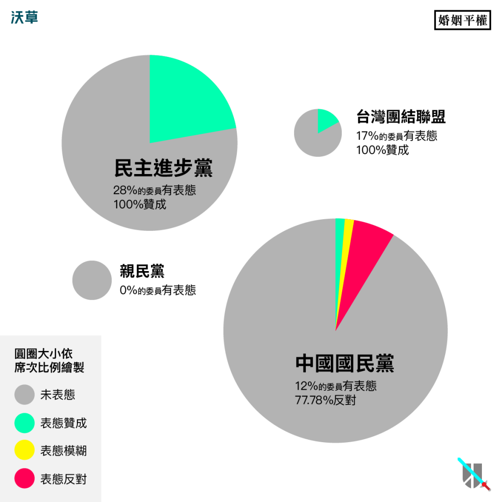
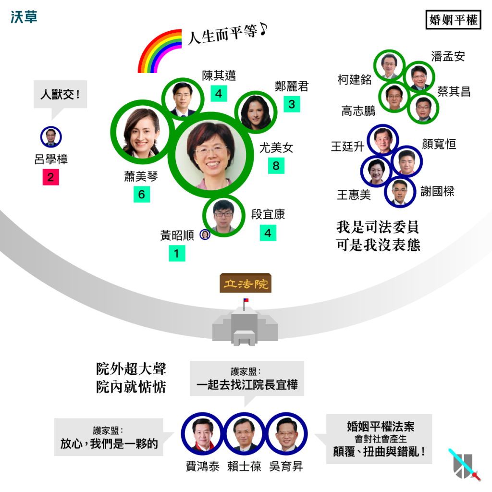

同志遊行每年都如此盛大，《婚姻平權法案》為什麼還躺在立法院？
文：王希（沃草｜立委出任務 專案經理）
從每年盛大的同志遊行，到2015年6月美國同性婚姻合法化的消息，在在說明婚姻平權受到社會的矚目。不管你是否支持婚姻平權，都應該關心各政黨及立委對此議題的表態，因為2016年，你的一票將選出新的國會，也決定這個法案的未來。
過去四年，立法院是怎麼討論婚姻平權議題的（點這裡看更多）？
就讓阿草用數據告訴你，事實可能跟你想的不一樣。
民進黨就是支持婚姻平權，國民黨就是反對？
圖表中可以看到民進黨共有37筆表態紀錄，全都是支持，而國民黨則有9筆表態紀錄，以反對居多。這樣看起來「民進黨就是支持婚姻平權，國民黨就是反對」似乎沒錯？

Photo Credit: 沃草
不過，民進黨其實只有28%的立委（即12位）曾經表態。
更重要的是，婚姻平權法案交由司法法制委員會審查，屬於這個委員會的立委應該都有責任表態，但實際上柯建銘、潘孟安、高志鵬、蔡其昌等這些曾經長期屬於司法委員會的資深立委，竟然對這個議題沒有過任何表態。既然沒有表態過，也就不能肯定他們都是支持或反對。
因此，比較正確的說法應該是：
民進黨中有表態紀錄的立委都是支持，但不代表民進黨所有立委都是支持。
而國民黨立委的表態率也只有12%，8位立委，其中黃昭順則曾經表態偏向支持。同時，在拒絕表態這件事上，國民黨立委也不落人後，其中謝國樑、顏寬恒、王廷升、王惠美這幾位同樣是司法委員會中不表態的資深立委。
正因各黨合計共有16位應表態卻沒有表態紀錄的立委，因此不應該只從表面結果就斷定民進黨支持、國民黨反對。
關心這個議題的選民也許更應該關心，到底為什麼有這麼多立委沒有表態？這麼多「特別不關心」這個議題的立委，是否也對這個議題正反雙方凝聚共識上，造成什麼影響？
究竟，誰是沉默的多數？
在立法院中，立委總席次是國民黨65席：民進黨40席，就算只看司法法制委員會內的席次，長期以來都是國民黨9席，民進黨4席。可見國民黨有人數的絕對優勢，但是直接比較兩方發言討論這個議題的次數卻是國民黨9次：民進黨17次，顯然不成比例。
也就是說，國民黨立委有著惜字如金的美德，或許他們不是想打混，只是想扮演好「沉默的多數」這個角色，但這樣的角色可能不太符合立委「為民喉舌」的形象。
說到這裡，你可能會反駁：「不對吧！明明新聞中常看到賴士葆、費鴻泰、吳育昇這些立委接受護家盟的陳情，堅定捍衛家庭價值。難道他們都沒有在立法院裡為這個議題發言嗎？」
殘酷的事實是，許多在媒體上公開表態支持護家盟理念的立委（其實不只上述三位立委，還包含了民進黨的劉櫂豪立委），卻幾乎不曾在立法院內針對這個議題進行正反意見的交流和辯論，實在很可惜。
我們強烈建議護家盟的朋友，應該去詢問這些立委，為什麼沒有在國會裡代表民意發聲？

Photo Credit: 沃草
另一方面，由相關新聞或同志團體公布的訊息中，發現如羅淑蕾、丁守中立委已轉變立場為支持同婚，或許也有其他國民黨立委是支持的態度，但是這些立場也沒有直接反映在他們的問政表現上。
支持比反對多，法案卻無法通過？
由上面圖表來看，尤美女（8次）可說是最關心這個議題的立委，總計提過兩次法案，主辦過兩次公聽會，四次發言紀錄，在這些方面的次數都是名列第一。
此外，蕭美琴（6）、陳其邁（4）、段宜康（4）、鄭麗君（3）、林淑芬（3）這些立委，雖然不是司法法制委員會的立委，但卻頻繁對這個議題表態，其中陳其邁、段宜康更是兩度以審查預算方式來要求行政機關促成修法。
上述這六位立委，占了將近四分之三的支持表態次數，可見他們的關心程度。而反對方的立委，則總共只有7位立委，且幾乎每個人都只有一次表態紀錄。
【註】括號內為表態次數。即使支持方和反對方的表態次數如此懸殊，但是這個法案在立法院內的審查進度卻不是十分順利。這或許可以說明兩個現象：
- 任何法案要修法通過，其實並不容易。支持方必須花好幾倍的時間心力去論述，但反對方阻擋修法卻不一定需要太多理由。
- 比起發言說明理由，反對方更傾向採用議事規則的方式阻擋修法。比如程序委員會擋下法案，各委員會的召委如果不關心這個議題就不排審，或者用其他議事程序的理由阻止開會等等。
結論
整體來說，雖然民進黨看起來是偏向支持婚姻平權，但表態紀錄高度集中在少數幾個立委身上（有趣的是，幾乎都是不分區立委），且也有許多不表態的立委，因此很難肯定下一屆民進黨立委的態度就是全面支持。
國民黨雖然整體偏向反對，但其實表態的人數和次數都更少。
至於其他小黨的立委，則幾乎未曾對這個議題發聲。
儘管這個議題近年來在社會上引起大規模討論，但各黨立委不表態的現象卻十分嚴重，這說明了：
婚姻平權法案，真正的困境是沉默的立院。
回到民主政治的本質，無論是支持或反對婚姻平權的選民，都應該要求代表你意見的立委多在立院內明確表態，才能藉由溝通討論凝聚共識，真正解決問題。
而在投票前夕，理性負責的選民也應該基於這些真實的表態紀錄進行投票選擇，才能選出真正代表民意的新國會。
文章獲沃草授權轉載，詳細表態內容請點入「沃草！立委出任務」
責任編輯：羊正鈺
核稿編輯：楊之瑜
核稿編輯：楊之瑜
SHARE：